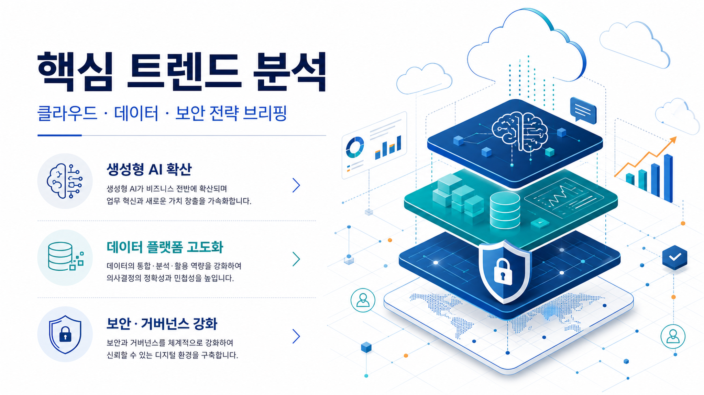
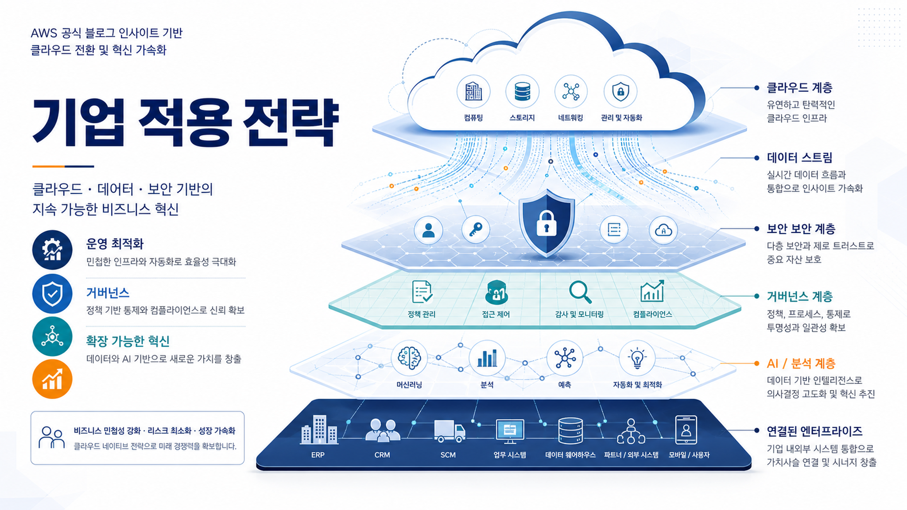
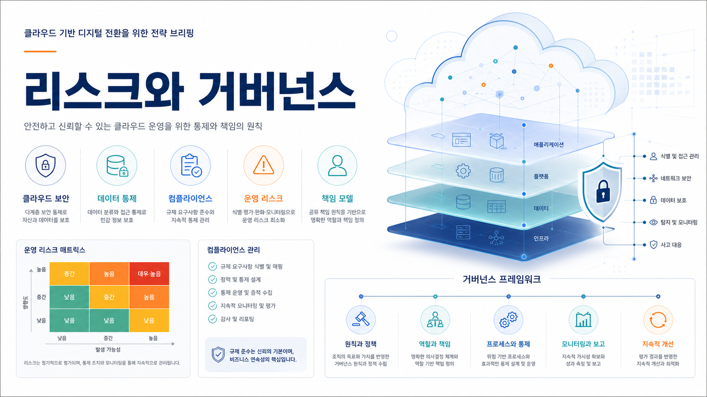

AI/ML
Amazon SageMaker 기반 AI/ML 활용 업데이트
AWS 공식 블로그에서 해당 서비스와 기술 주제를 다룬 신규 게시물이 확인되었습니다. 원문 세부사항은 출처 URL 기준으로 확인해야 합니다.
원문 확인AWS 공식 블로그 수집 · LLM Wiki 동기화
이번 실행 신규 저장 항목을 기준으로 작성했습니다. 원문 보존, LLM Wiki source-summary, GBrain 파일 저장을 먼저 수행한 뒤 확인 가능한 범위의 시사점만 정리했습니다.

이미지 모드: gpt-image-2
확인한 AWS 공식 RSS는 3개이며, 오늘 신규 저장된 문서는 3건입니다. 본문은 영어 원제나 원문 추출 잔여 문구를 화면에 노출하지 않고, 별도 한국어 표시 필드로 렌더링했습니다.
수집 항목 중 AI/ML 관련 서비스가 포함된 경우, 모델·Agent·데이터 처리 흐름의 실제 적용 조건을 원문 기준으로 재확인해야 합니다.
데이터·분석 주제는 기능 발표 자체보다 데이터 접근 권한, 품질, 비용 예측 가능성의 검토 필요성을 함께 제기합니다.
보안·관측성·권한 항목은 서비스 도입 전 감사 가능성과 책임 경계를 확인해야 하는 검토 포인트로 남습니다.

AWS 공식 블로그는 서비스 기능, 참조 아키텍처, 고객 사례, 운영 도구를 빠르게 공개합니다. 따라서 기업 검토자는 기능 이름보다 원문에서 확인되는 적용 조건, 보안 전제, 비용 영향, 기존 시스템과의 연동 범위를 우선 점검해야 합니다.
AI/ML
AWS 공식 블로그에서 해당 서비스와 기술 주제를 다룬 신규 게시물이 확인되었습니다. 원문 세부사항은 출처 URL 기준으로 확인해야 합니다.
원문 확인AI/ML
AWS 공식 블로그에서 해당 서비스와 기술 주제를 다룬 신규 게시물이 확인되었습니다. 원문 세부사항은 출처 URL 기준으로 확인해야 합니다.
원문 확인AI/ML
제품 개발, 테스트 코드 작성, 인프라 정의 변경, 운영 스크립트 작성까지 AI 에이전트와 함께 처리하는 조직이 늘고 있습니다. 원문 세부사항은 출처 URL 기준으로 확인해야 합니다.
원문 확인
| 관찰된 사실 | 근거 출처 URL | 기업 의사결정 시사점/리스크/기회 |
|---|---|---|
| AWS 공식 블로그에서 해당 서비스와 기술 주제를 다룬 신규 게시물이 확인되었습니다. 원문 세부사항은 출처 URL 기준으로 확인해야 합니다. | 근거 URL | 관찰된 사실은 Amazon SageMaker 관련 기능·사례·운영 조건을 재검토할 필요가 있음을 보여줍니다. 기업 의사결정자는 데이터 권한, 보안 통제, 비용 영향, 기존 시스템 통합 난이도를 원문 기준으로 확인해야 합니다. |
| AWS 공식 블로그에서 해당 서비스와 기술 주제를 다룬 신규 게시물이 확인되었습니다. 원문 세부사항은 출처 URL 기준으로 확인해야 합니다. | 근거 URL | 관찰된 사실은 Amazon Bedrock AgentCore 관련 기능·사례·운영 조건을 재검토할 필요가 있음을 보여줍니다. 기업 의사결정자는 데이터 권한, 보안 통제, 비용 영향, 기존 시스템 통합 난이도를 원문 기준으로 확인해야 합니다. |
| 제품 개발, 테스트 코드 작성, 인프라 정의 변경, 운영 스크립트 작성까지 AI 에이전트와 함께 처리하는 조직이 늘고 있습니다. 원문 세부사항은 출처 URL 기준으로 확인해야 합니다. | 근거 URL | 관찰된 사실은 Amazon S3 관련 기능·사례·운영 조건을 재검토할 필요가 있음을 보여줍니다. 기업 의사결정자는 데이터 권한, 보안 통제, 비용 영향, 기존 시스템 통합 난이도를 원문 기준으로 확인해야 합니다. |